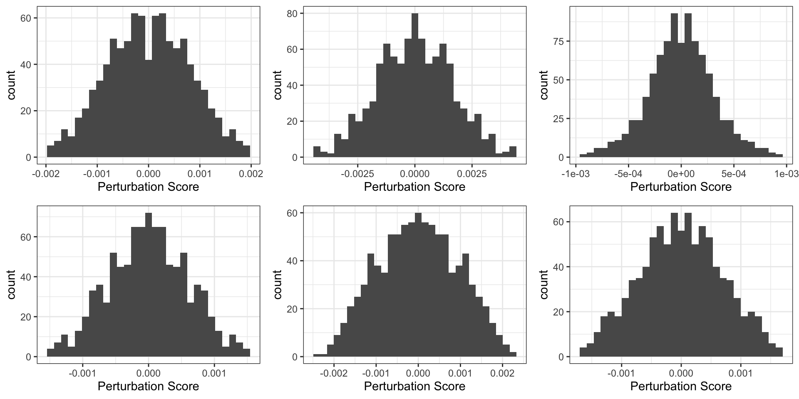

Last updated: 2023-09-19
Checks: 7 0
Knit directory: WenjunLiu_Thesis_Chapter4/
This reproducible R Markdown analysis was created with workflowr (version 1.7.0). The Checks tab describes the reproducibility checks that were applied when the results were created. The Past versions tab lists the development history.
Great! Since the R Markdown file has been committed to the Git repository, you know the exact version of the code that produced these results.
Great job! The global environment was empty. Objects defined in the global environment can affect the analysis in your R Markdown file in unknown ways. For reproduciblity it’s best to always run the code in an empty environment.
The command set.seed(20200930) was run prior to running
the code in the R Markdown file. Setting a seed ensures that any results
that rely on randomness, e.g. subsampling or permutations, are
reproducible.
Great job! Recording the operating system, R version, and package versions is critical for reproducibility.
Nice! There were no cached chunks for this analysis, so you can be confident that you successfully produced the results during this run.
Great job! Using relative paths to the files within your workflowr project makes it easier to run your code on other machines.
Great! You are using Git for version control. Tracking code development and connecting the code version to the results is critical for reproducibility.
The results in this page were generated with repository version 772af9f. See the Past versions tab to see a history of the changes made to the R Markdown and HTML files.
Note that you need to be careful to ensure that all relevant files for
the analysis have been committed to Git prior to generating the results
(you can use wflow_publish or
wflow_git_commit). workflowr only checks the R Markdown
file, but you know if there are other scripts or data files that it
depends on. Below is the status of the Git repository when the results
were generated:
Ignored files:
Ignored: .Rhistory
Ignored: .Rproj.user/
Ignored: data/.DS_Store
Ignored: data/aligned/
Ignored: data/knott_scRNA.rds
Ignored: data/knott_scRNA.rds.zip
Ignored: data/raw/
Ignored: data/scRNA_ref/
Ignored: data/trimmed/
Ignored: output/permutedscore_tumor.rds
Ignored: output/tcga_breast.rds
Untracked files:
Untracked: .DS_Store
Untracked: data/CellLine_sSNAPPY.rds
Untracked: data/EMT_marker.txt
Untracked: hsa04066.pathview.png
Unstaged changes:
Modified: analysis/DHT_signal.Rmd
Modified: analysis/IDC_ILC.Rmd
Modified: analysis/hsa04066.pathview.png
Note that any generated files, e.g. HTML, png, CSS, etc., are not included in this status report because it is ok for generated content to have uncommitted changes.
These are the previous versions of the repository in which changes were
made to the R Markdown (analysis/sSNAPPY.Rmd) and HTML
(docs/sSNAPPY.html) files. If you’ve configured a remote
Git repository (see ?wflow_git_remote), click on the
hyperlinks in the table below to view the files as they were in that
past version.
| File | Version | Author | Date | Message |
|---|---|---|---|---|
| Rmd | 4b12097 | Wenjun-Liu | 2023-08-02 | tidy up all Rmd for thesis |
| html | 4b12097 | Wenjun-Liu | 2023-08-02 | tidy up all Rmd for thesis |
library(tidyverse)
library(yaml)
library(scales)
library(pander)
library(AnnotationHub)
library(ggraph)
library(igraph)
library(ensembldb)
library(cowplot)
library(magrittr)
library(sSNAPPY)
library(cqn)
library(DT)
library(multcomp)
library(rvest)
library(ggfortify)
library(xml2)
library(org.Hs.eg.db)
library(lme4)
library(colorspace)
library(lmerTest)
library(reactable)
library(corrplot)
library(scatterpie)
library(htmltools)
library(RColorBrewer)
library(msigdbr)
library(UpSetR)
library(glue)
library(ggfortify)
library(pheatmap)
library(parallel)
library(ggplotify)
library(edgeR)
library(plotly)
library(ggforce)
library(ggnewscale)
library(concaveman)
library(fgsea)panderOptions("table.split.table", Inf)
panderOptions("big.mark", ",")
theme_set(theme_bw())config <- here::here("config/config.yml") %>%
read_yaml()
suffix <- paste0(config$tag)
sp <- config$ref$species %>%
str_replace("(^[a-z])[a-z]*_([a-z]+)", "\\1\\2") %>%
str_to_title()formatP <- function(p, m = 0.0001){
out <- rep("", length(p))
out[p < m] <- sprintf("%.2e", p[p<m])
out[p >= m] <- sprintf("%.4f", p[p>=m])
out
}ah <- AnnotationHub() %>%
subset(rdataclass == "EnsDb") %>%
subset(str_detect(description, as.character(config$ref$release))) %>%
subset(genome == config$ref$build)
stopifnot(length(ah) == 1)ensDb <- ah[[1]]
genesGR <- read_rds(here::here("output/genesGR.rds"))Sample metadata and merged counts were read in and filtered as in the
dge_analysis.Rmd. DGElists were formed for normal and tumor samples and
cqn was applied for biases introduced by systematic
artefacts.
init_cellType <- read_delim(here::here("config/sample_meta.txt"), delim = "\t")
init_cellType <- init_cellType %>%
mutate(Stroma = ifelse(str_detect(Dominant_cell_type, regex("Stroma", ignore_case = T)), TRUE, FALSE),
Epithelial = ifelse(str_detect(Dominant_cell_type, regex("Epithelial", ignore_case = T)), TRUE, FALSE),
Ducts = ifelse(str_detect(Dominant_cell_type, regex("ducts", ignore_case = T)), TRUE, FALSE),
Fat = ifelse(str_detect(Dominant_cell_type, regex("fat", ignore_case = T)), TRUE, FALSE),
patient = str_replace(patient, "TH", "TH-")) %>%
pivot_longer(c("Stroma", "Epithelial", "Ducts", "Fat"),
names_to = "cell_type",
values_to = "TF") %>%
mutate(cell_type = ifelse(TF, cell_type, NA)) %>%
dplyr::select(-c("TF", "Dominant_cell_type")) %>%
.[!is.na(.$cell_type),] %>%
chop("cell_type") %>%
mutate(cell_type = vapply(.$cell_type, function(x){
paste(x,collapse = ";")
}, character(1)))samples <- config$samples %>%
here::here() %>%
read_tsv() %>%
left_join(init_cellType) %>%
mutate(
Filename = paste0(sample, ".r_1"),
condition = ifelse(Tumor,
paste("Tumor", treat, sep = "_"),
paste("Normal", treat, sep = "_")),
patient = vapply(.$patient, function(x){str_split(x, "-")[[1]][2]}, character(1)),
patient = ifelse(Tumor,
paste("Tumor", patient, sep = "-"),
paste("Normal",patient, sep = "-")),
desc = paste(patient, treat, sep = " ")
) %>%
dplyr::select(-c("name", "sample")) %>%
dplyr::rename(name = desc) %>%
mutate_if(
function(x){length(unique(x)) < length(x)},
as.factor
) %>%
mutate(
treat = relevel(treat, ref = "Veh")
)mergedSamples <- samples %>%
group_by(name, patient, treat, Tumor, cell_type, Tissue_type, Age, Diagnosis) %>%
tally()
tumor_sample <- mergedSamples %>%
dplyr::filter(Tumor == TRUE) %>%
droplevels()Tumour samples were classified into a IDC-like and a ILC-like group bassing on the analysis in ILC/IDC classification:
tumor_sample <- tumor_sample %>%
dplyr::mutate(
Diagnosis = ifelse(
str_detect(Diagnosis, "invasive"),
"ILC-like", "IDC-like"
),
Diagnosis = ifelse(
patient == "Tumor-8",
"IDC-like",
Diagnosis
),
Diagnosis = as.factor(Diagnosis)
)tumor_sample %>%
ungroup() %>%
dplyr::select(patient, Diagnosis) %>%
unique() %>%
pander()| patient | Diagnosis |
|---|---|
| Tumor-1 | ILC-like |
| Tumor-2 | IDC-like |
| Tumor-3 | IDC-like |
| Tumor-4 | ILC-like |
| Tumor-5 | IDC-like |
| Tumor-6 | ILC-like |
| Tumor-7 | ILC-like |
| Tumor-8 | IDC-like |
treat_cols <- c(
Veh = rgb(0.7, 0.7, 0.7),
DHT = rgb(0.8, 0.2, 0.2),
E2 = rgb(0.2, 0.2, 0.8),
`E2+DHT` = rgb(1, 0.4, 1)
)
tumor_cols <- hcl.colors(
n = length(unique(samples$Tumor)),
palette = "Zissou 1"
) %>%
setNames(unique(samples$Tumor))
patient_cols <- hcl.colors(
n = length(levels(mergedSamples$patient)),
palette = "Spectral"
) %>%
setNames(levels(mergedSamples$patient))
diag_cols <- readRDS("~/GSE800098/output/diag_cols.rds")treat_shapes <- c(
Veh = 1,
DHT = 19,
E2 = 15,
`E2+DHT` = 17
)# counts <- here::here("data/aligned/counts/counts.out.gz") %>%
# gzfile() %>%
# read_tsv(comment = "#") %>%
# dplyr::select(Geneid, ends_with("bam")) %>%
# rename_at(vars(ends_with("bam")), dirname) %>%
# rename_all(basename) %>%
# column_to_rownames("Geneid")# mergedCounts <- counts %>%
# rownames_to_column("gene_id") %>%
# pivot_longer(
# cols = -gene_id,
# names_to = "Filename",
# values_to = "counts"
# ) %>%
# left_join(samples, by = "Filename") %>%
# group_by(
# gene_id, name, patient, treat, Tumor) %>%
# summarise(counts = sum(counts), .groups = "drop") %>%
# pivot_wider(
# id_cols = gene_id,
# values_from = counts,
# names_from = name
# ) %>%
# column_to_rownames("gene_id")
# saveRDS(mergedCounts, here::here("data/mergedCounts.rds"))
mergedCounts <- readRDS(here::here("data/mergedCounts.rds")) used (Mb) gc trigger (Mb) limit (Mb) max used (Mb)
Ncells 11106364 593.2 16597097 886.4 NA 16597097 886.4
Vcells 26761320 204.2 47182743 360.0 204800 32643524 249.1The filtered and normalised DGEList was loaded in.
dge_tumor <- readRDS(here::here("output/dge_tumor.rds"))cqNorma_tumor <- with(
dge_tumor,
cqn(
counts= counts,
x = genes$gc_content,
lengths = genes$ave_tx_len
)
)
dge_tumor$offset <- cqNorma_tumor$glm.offset
logCPM_tumor <- cqNorma_tumor$y + cqNorma_tumor$offsetpcaPost_tumor <- logCPM_tumor %>%
t() %>%
prcomp() To apply the sSNAPPY workflow, the rownames of the logCPM matrix must be converted from gene IDs to entrez ID.
rownames(logCPM_tumor) <- mapIds(ensDb,rownames(logCPM_tumor), "ENTREZID", keytype = "GENEID")
logCPM_tumor <- logCPM_tumor[!is.na(rownames(logCPM_tumor)),]Pathway topologies of KEGG pathways were retrieved.
gsTopology <- retrieve_topology(database = "kegg", species = "hsapiens")315 pathways were retrieved. To make the results more intepretable and more relevant to this project, irrelevant KEGG pathways were filtered out.
KEGG pathway categorizations were retrieved from KEGG official website:
# keggCategory <- read_html("https://www.genome.jp/kegg/pathway.html")
# # keggCategory %>%
# # html_node("body") %>%
# # xml_find_all("//b[@id]") %>%
# # html_text()
# subCategory <- keggCategory %>%
# html_node("body") %>%
# xml_find_all("//b") %>%
# html_text()
#
# KEGGwithN <- keggCategory %>%
# html_node("body") %>%
# xml_find_all("//div[contains(@class, 'list')]") %>%
# .[-c(1:4)] %>%
# html_text()
# keggCategory <- KEGGwithN %>%
# setNames(subCategory[-c(1:9)]) %>%
# enframe(name = "subcategory",
# value = "pathways") %>%
# mutate(pathways = strsplit(pathways, "\n ")) %>%
# unnest(pathways) %>%
# dplyr::filter(pathways != "",
# pathways != " ") %>%
# mutate(
# pathways = vapply(.$pathways, function(x){
# str_remove(x, "[0-9]{5} M R|[0-9]{5} M N")
# }, character(1))) %>%
# mutate(
# pathways = vapply(.$pathways, function(x){
# str_remove(x, "[0-9]{5} M")
# }, character(1))) %>%
# mutate(
# pathways = vapply(.$pathways, function(x){
# str_remove(x, "[0-9]{5} N")
# }, character(1))) %>%
# mutate(
# pathways = vapply(.$pathways, function(x){
# str_remove(x, "[0-9]{5}")
# }, character(1))) %>%
# mutate(main = vapply(.$subcategory, function(x){
# str_sub(x, start = 1, end = 2)
# }, character(1))) %>%
# left_join(subCategory[c(2:8)] %>%
# enframe(name = NULL,
# value = "Category") %>%
# mutate(
# main = vapply(.$Category, function(x){
# str_sub(x, start = 1, end = 2)
# }, character(1)),
# Category = vapply(.$Category, function(x){
# str_sub(x, start = 3, end = -1)
# }, character(1))
# )) %>%
# mutate(
# subNumber = vapply(.$subcategory, function(x){
# str_split(x, " ")[[1]][1]
# }, character(1)),
# subcategory = vapply(.$subcategory, function(x){
# str_remove(x
# , "^.\\.[0-9]{1,} ")
# }, character(1))
# ) %>%
# dplyr::select(Category, subNumber, subcategory, pathways) %>%
# mutate(pathways = vapply(.$pathways, function(x){
# str_trim(x, side = "left")
# }, character(1)))
#saveRDS(keggCategory, file = here::here("output/keggCategory.rds"))
keggCategory <- readRDS(here::here("output/keggCategory.rds"))
keggCategory %>%
mutate_all(as.factor) %>%
datatable(filter = "top")Irrelevant categories as shown below were filtered out:
keggCategory %>%
dplyr::filter(subNumber %in% c("5.3", "5.4", "5.5", "5.6", "5.7",
"6.3", "6.4", "6.5", "6.6", "6.8", "6.12")) %>%
pull(subcategory) %>%
unique() [1] "Circulatory system" "Digestive system"
[3] "Excretory system" "Nervous system"
[5] "Sensory system" "Infectious disease: viral"
[7] "Infectious disease: bacterial" "Infectious disease: parasitic"
[9] "Immune disease" "Substance dependence"
[11] "Drug resistance: antineoplastic"gsTokeep <- keggCategory %>%
mutate(pathways = paste("kegg.", pathways, sep = "")) %>%
dplyr::filter(pathways %in% names(gsTopology)) %>%
dplyr::filter(!subNumber %in% c("5.3", "5.4", "5.5", "5.6", "5.7",
"6.3", "6.4", "6.5", "6.6", "6.8", "6.12")) %>%
pull(pathways)
#saveRDS(gsTokeep, file = here::here("output/kg_gsTokeep.rds"))
gsTokeep <- readRDS(here::here("output/kg_gsTokeep.rds"))
gsTopology <- gsTopology[names(gsTopology) %in% gsTokeep]gsAnnotation_df <- keggCategory %>%
mutate(pathways = paste("kegg.", pathways, sep = "")) %>%
dplyr::select(gs_name = pathways,
category = subcategory)
#save(gsAnnotation_df, file = here::here("data/gsAnnotation.rda"))235 KEGG pathways are kept after filtering.
Weighted single-sample logFC (ssFC) were calculated within each sample.
weightedFC_tumor <- sSNAPPY::weight_ss_fc(logCPM_tumor, tumor_sample, groupBy = "patient", treatColumn = "treat", sampleColumn = "name")Raw single sample perturbation scores for each treated sample each KEGG pathway were calculated.
genePertScore_tumor <- raw_gene_pert(weightedFC_tumor$weighted_logFC, gsTopology)
ssPertScore_tumor <- pathway_pert(genePertScore_tumor, weightedFC_tumor$weighted_logFC)Null distribution of perturbation scores were generated through sample permutation. 31 x 32 = 992 permuted pseudo-pairs were formed to compute permuted perturbation scores.
# set.seed(123)
# permutedScore_tumor <- generate_permuted_scores(
# logCPM_tumor,
# gsTopology = gsTopology,
# weight = weightedFC_tumor$weight
# )
# write_rds(permutedScore_tumor, here::here("output/permutedscore_tumor.rds"))
permutedScore_tumor <- read_rds(here::here("output/permutedscore_tumor.rds"))Six random permutation-simulated null distributions were sampled and plotted. As expected, they are all very close to normally distribution.
pl <- permutedScore_tumor %>%
keep(~all(.!=0)) %>%
.[sample(seq_along(.), 6)] %>%
lapply(
function(x){
ggplot(mapping = aes(x)) +
geom_histogram() +
xlab("Perturbation Score")
}
)
plot_grid(plotlist = pl, nrow = 2)
| Version | Author | Date |
|---|---|---|
| 4b12097 | Wenjun-Liu | 2023-08-02 |
Raw perturbation scores were converted to robust z-scores based on the median and MAD derived from the null distributions. A two-side permutation p-value was computed for each z-score and corrected for multiple testings.
There wasn’t any pathway that was significantly perturbed on single-sample level among tumor samples.
normalisedScores_tumor <- normalise_by_permu(permutedScore_tumor, ssPertScore_tumor)
# saveRDS(normalisedScores_tumor, here::here("output/normalisedScores_tumor.rds"))
normalisedScores_tumor %>%
dplyr::filter(adjPvalue < 0.05) [1] MAD MEDIAN gs_name sample score robustZ pvalue
[8] adjPvalue
<0 rows> (or 0-length row.names)Correlations between the first three principle components of pathway activities and patients metadata were visualised below. As seen in the gene-level PCA, the differet tumour subtypes (i.e. IDC-like/ILC-like) is still the strongest confounding factor.
zmad_pca_tumor <- normalisedScores_tumor %>%
bind_rows() %>%
dplyr::select(gs_name, robustZ, sample) %>%
pivot_wider(names_from = sample, values_from = robustZ) %>%
column_to_rownames("gs_name") %>%
replace(is.na(.), 0) %>%
t() %>%
prcomp()
zmad_pca_tumor$x %>%
as.data.frame() %>%
rownames_to_column("name") %>%
left_join(tumor_sample) %>%
dplyr::select(PC1, PC2, PC3, Ptient = patient,
Treatment = treat,
Subtype = Diagnosis,
Age
) %>%
mutate_all(as.numeric) %>%
cor() %>%
corrplot(
type = "lower",
diag = FALSE,
addCoef.col = "black",
col = rev(COL2('RdBu', 200)),
addCoefasPercent = TRUE
)Correlations between the first three components of KEGG pathway activities and patients metadata among tumor samples. As seen in the gene-level PCA, the differet tumour subtypes (i.e. IDC-like/ILC-like) is still the strongest confounding factor.
| Version | Author | Date |
|---|---|---|
| 4b12097 | Wenjun-Liu | 2023-08-02 |
new_diag_col <- qualitative_hcl(2, palette = "Dark 3") %>%
set_names(c("IDC-like", "ILC-like"))
new_treat_col <- qualitative_hcl(4, palette = "Dynamic") %>%
set_names(levels(tumor_sample$treat))To make the results more interpretable biologically,
treatment and diagnosis was combined into one
co-factor to model treatment-level pathway activities with each tumour
subtype.
fit_tumor <- normalisedScores_tumor %>%
left_join(tumor_sample %>%
dplyr::rename(
sample = name
)) %>%
mutate(group = paste(treat, Diagnosis, sep = "_"),
group = as.factor(group)) %>%
split(f = .$gs_name) %>%
lapply(function(x)lm(robustZ ~ 0 + group, data = x)) %>%
lapply(summary)
treat_sig_tumor <- sapply(names(fit_tumor), function(x){
fit_tumor[[x]]$coefficients %>%
as.data.frame() %>%
.[, c("t value" ,"Pr(>|t|)")] %>%
rownames_to_column("Comparison") %>%
dplyr::rename(`P-value` = `Pr(>|t|)`,
`t statistic` = `t value`) %>%
mutate(
Comparison = str_remove_all(Comparison, "group"),
FDR = p.adjust(`P-value`, "fdr"),
gs_name = x)},
simplify = FALSE) %>%
bind_rows() sig_tumor_ls <- treat_sig_tumor %>%
dplyr::filter(FDR < 0.05) %>%
split(f = .$Comparison)The pathways that were on average perturbed due to each treatment among tumor samples were:
treat_sig_tumor %>%
dplyr::filter(FDR < 0.05) %>%
mutate_at(vars(c("Comparison", "gs_name")), as.factor) %>%
mutate_if(is.numeric, sprintf, fmt = '%#.4f') %>%
mutate(
Direction = ifelse(`t statistic` < 0, "Inhibited", "Activation"),
gs_name = str_remove_all(gs_name, "kegg.")) %>%
dplyr::select(
Comparison, `t statistic`, Direction,
`Gene-set name` = gs_name,
FDR
) %>%
datatable(
filter = "top",
options = list(
columnDefs = list(list(targets = "Direction", visible = FALSE))
)
) %>%
formatStyle(
't statistic', 'Direction',
color = styleEqual(c("Inhibited", "Activation"), c('blue', 'red'))
)The significantly perturbed pathways are labelled in black in the heatmap below:
gs2plot <- treat_sig_tumor %>%
# dplyr::filter(str_detect(Comparison, "infiltrating|invasive")) %>%
dplyr::filter(FDR < 0.05) %>%
pull(gs_name) %>%
unique()
rowO <- treat_sig_tumor %>%
dplyr::filter(gs_name %in% gs2plot) %>%
mutate(gs_name = str_remove_all(gs_name, "kegg.")) %>%
dplyr::select(-c("FDR", "P-value")) %>%
pivot_wider(names_from = Comparison, values_from = `t statistic`) %>%
replace(is.na(.),0) %>%
column_to_rownames("gs_name") %>%
dist() %>%
hclust()
treat_sig_tumor %>%
dplyr::filter(gs_name %in% gs2plot) %>%
mutate(
Sig = ifelse(FDR < 0.05, TRUE, FALSE),
`t statistic` = round(`t statistic`, 2),
FDR = sprintf(FDR, fmt = '%#.4f'),
label = paste(`t statistic`, "\n(", FDR, ")", sep = ""),
gs_name = str_remove_all(gs_name, "kegg."),
Type = ifelse(
str_detect(Comparison, "IDC"), "IDC-like", "ILC-like"
)
) %>%
ggplot(aes(Comparison,
factor(gs_name, levels = rowO$labels[rowO$order]))) +
geom_tile(aes(fill = `t statistic`)) +
geom_text(data = . %>% dplyr::filter(Sig),
aes(label = label), size = 3, color = "black") +
scale_fill_distiller(palette = "RdBu",
limit = c(-5,5),
name = "T-statistic") +
facet_grid(~Type, scales = "free", space = "free") +
theme(
axis.title=element_blank(),
panel.grid = element_blank(),
# axis.ticks = element_blank(),
strip.text = element_text(size=14),
legend.key.size = unit(3, 'mm')
) +
panel_border(remove = TRUE) Pathways that were significantly perturbed in at least one treatment & tissue type among tumor sample
| Version | Author | Date |
|---|---|---|
| 4b12097 | Wenjun-Liu | 2023-08-02 |
We also re-performed the DE analysis with the predicted tumour subtypes incorporated.
dge_tumor$samples <- dge_tumor$samples %>%
mutate(
Diagnosis = as.character(Diagnosis),
Diagnosis = ifelse(
patient == "Tumor-8", "IDC-like",
Diagnosis
),
Diagnosis = ifelse(
str_detect(Diagnosis, "invasive"),
"ILC-like", "IDC-like"),
group = paste(treat, Diagnosis, sep = "_")
)alpha <- 0.05
DE_byDiagnosis <- sapply(c("ILC-like", "IDC-like"), function(x){
sample <- dge_tumor$samples %>%
dplyr::filter(Diagnosis == x) %>%
pull(name)
dge_sub <- dge_tumor %>%
.[,colnames(.) %in% sample]
X <- model.matrix(~ 0 + patient + treat ,
data = dge_sub$samples
) %>%
set_colnames(str_remove_all(colnames(.), "treat")) %>%
.[,colSums(.) != 0]
dge_sub <- estimateDisp(dge_sub, design = X, robust = TRUE)
fit <- glmQLFit(dge_sub)
sapply(c("DHT", "E2", "E2+DHT"), function(y){
glmQLFTest(fit, coef = y) %>%
topTags(n = Inf) %>%
.[["table"]] %>%
as_tibble() %>%
mutate(
location = paste0(seqnames, ":", start, "-", end, ":", strand),
rankingStat = -sign(logFC)*log10(PValue),
signedRank = rank(rankingStat),
DE = FDR < alpha,
treatment = y,
Diagnosis = x
) %>%
dplyr::select(
gene_id, gene_name, logCPM, logFC, PValue, FDR,
location, gene_biotype, entrezid, ave_tx_len, gc_content,
rankingStat, signedRank, DE, treatment, Diagnosis
)
}, simplify = FALSE) %>%
bind_rows()
}, simplify = FALSE) But we were still unable to detect any gene passing the statistical threshold of FDR < 0.05 in any treatment group.
lapply(DE_byDiagnosis, dplyr::filter, DE)$`ILC-like`
# A tibble: 0 × 16
# ℹ 16 variables: gene_id <chr>, gene_name <chr>, logCPM <dbl>, logFC <dbl>,
# PValue <dbl>, FDR <dbl>, location <chr>, gene_biotype <chr>,
# entrezid <I<list>>, ave_tx_len <dbl>, gc_content <dbl>, rankingStat <dbl>,
# signedRank <dbl>, DE <lgl>, treatment <chr>, Diagnosis <chr>
$`IDC-like`
# A tibble: 0 × 16
# ℹ 16 variables: gene_id <chr>, gene_name <chr>, logCPM <dbl>, logFC <dbl>,
# PValue <dbl>, FDR <dbl>, location <chr>, gene_biotype <chr>,
# entrezid <I<list>>, ave_tx_len <dbl>, gc_content <dbl>, rankingStat <dbl>,
# signedRank <dbl>, DE <lgl>, treatment <chr>, Diagnosis <chr>Code used to generate figures for the thesis.
sessionInfo()R version 4.3.0 (2023-04-21)
Platform: x86_64-apple-darwin20 (64-bit)
Running under: macOS Ventura 13.3.1
Matrix products: default
BLAS: /Library/Frameworks/R.framework/Versions/4.3-x86_64/Resources/lib/libRblas.0.dylib
LAPACK: /Library/Frameworks/R.framework/Versions/4.3-x86_64/Resources/lib/libRlapack.dylib; LAPACK version 3.11.0
locale:
[1] en_US.UTF-8/en_US.UTF-8/en_US.UTF-8/C/en_US.UTF-8/en_US.UTF-8
time zone: Australia/Adelaide
tzcode source: internal
attached base packages:
[1] parallel splines stats4 stats graphics grDevices utils
[8] datasets methods base
other attached packages:
[1] fgsea_1.26.0 concaveman_1.1.0 ggnewscale_0.4.9
[4] ggforce_0.4.1 plotly_4.10.2 edgeR_3.42.4
[7] limma_3.56.2 ggplotify_0.1.1 pheatmap_1.0.12
[10] glue_1.6.2 UpSetR_1.4.0 msigdbr_7.5.1
[13] RColorBrewer_1.1-3 htmltools_0.5.5 scatterpie_0.2.1
[16] corrplot_0.92 reactable_0.4.4 lmerTest_3.1-3
[19] colorspace_2.1-0 lme4_1.1-34 Matrix_1.6-0
[22] org.Hs.eg.db_3.17.0 xml2_1.3.5 ggfortify_0.4.16
[25] rvest_1.0.3 multcomp_1.4-25 TH.data_1.1-2
[28] MASS_7.3-60 survival_3.5-5 mvtnorm_1.2-2
[31] DT_0.28 cqn_1.46.0 quantreg_5.95
[34] SparseM_1.81 preprocessCore_1.62.1 nor1mix_1.3-0
[37] mclust_6.0.0 sSNAPPY_1.5.1 magrittr_2.0.3
[40] cowplot_1.1.1 ensembldb_2.24.0 AnnotationFilter_1.24.0
[43] GenomicFeatures_1.52.1 AnnotationDbi_1.62.2 Biobase_2.60.0
[46] GenomicRanges_1.52.0 GenomeInfoDb_1.36.1 IRanges_2.34.1
[49] S4Vectors_0.38.1 igraph_1.5.0 ggraph_2.1.0
[52] AnnotationHub_3.8.0 BiocFileCache_2.8.0 dbplyr_2.3.3
[55] BiocGenerics_0.46.0 pander_0.6.5 scales_1.2.1
[58] yaml_2.3.7 lubridate_1.9.2 forcats_1.0.0
[61] stringr_1.5.0 dplyr_1.1.2 purrr_1.0.1
[64] readr_2.1.4 tidyr_1.3.0 tibble_3.2.1
[67] ggplot2_3.4.2 tidyverse_2.0.0
loaded via a namespace (and not attached):
[1] fs_1.6.2 ProtGenerics_1.32.0
[3] matrixStats_1.0.0 bitops_1.0-7
[5] httr_1.4.6 numDeriv_2016.8-1.1
[7] tools_4.3.0 utf8_1.2.3
[9] R6_2.5.1 lazyeval_0.2.2
[11] withr_2.5.0 graphite_1.46.0
[13] prettyunits_1.1.1 gridExtra_2.3
[15] cli_3.6.1 sandwich_3.0-2
[17] labeling_0.4.2 sass_0.4.6
[19] Rsamtools_2.16.0 yulab.utils_0.0.6
[21] rstudioapi_0.15.0 RSQLite_2.3.1
[23] generics_0.1.3 gridGraphics_0.5-1
[25] BiocIO_1.10.0 gtools_3.9.4
[27] crosstalk_1.2.0 vroom_1.6.3
[29] fansi_1.0.4 lifecycle_1.0.3
[31] whisker_0.4.1 SummarizedExperiment_1.30.2
[33] grid_4.3.0 blob_1.2.4
[35] promises_1.2.0.1 crayon_1.5.2
[37] lattice_0.21-8 KEGGREST_1.40.0
[39] pillar_1.9.0 knitr_1.43
[41] rjson_0.2.21 boot_1.3-28.1
[43] codetools_0.2-19 fastmatch_1.1-3
[45] ggfun_0.1.1 data.table_1.14.8
[47] vctrs_0.6.3 png_0.1-8
[49] gtable_0.3.3 cachem_1.0.8
[51] xfun_0.39 S4Arrays_1.0.4
[53] mime_0.12 tidygraph_1.2.3
[55] statmod_1.5.0 interactiveDisplayBase_1.38.0
[57] ellipsis_0.3.2 nlme_3.1-162
[59] bit64_4.0.5 progress_1.2.2
[61] filelock_1.0.2 rprojroot_2.0.3
[63] bslib_0.5.0 DBI_1.1.3
[65] tidyselect_1.2.0 bit_4.0.5
[67] compiler_4.3.0 curl_5.0.1
[69] git2r_0.32.0 graph_1.78.0
[71] DelayedArray_0.26.6 rtracklayer_1.60.0
[73] rappdirs_0.3.3 digest_0.6.33
[75] minqa_1.2.5 rmarkdown_2.23
[77] XVector_0.40.0 pkgconfig_2.0.3
[79] MatrixGenerics_1.12.2 highr_0.10
[81] fastmap_1.1.1 rlang_1.1.1
[83] htmlwidgets_1.6.2 shiny_1.7.4.1
[85] farver_2.1.1 jquerylib_0.1.4
[87] zoo_1.8-12 jsonlite_1.8.7
[89] BiocParallel_1.34.2 RCurl_1.98-1.12
[91] GenomeInfoDbData_1.2.10 munsell_0.5.0
[93] Rcpp_1.0.11 babelgene_22.9
[95] viridis_0.6.4 stringi_1.7.12
[97] zlibbioc_1.46.0 plyr_1.8.8
[99] ggrepel_0.9.3 Biostrings_2.68.1
[101] graphlayouts_1.0.0 hms_1.1.3
[103] locfit_1.5-9.8 reshape2_1.4.4
[105] biomaRt_2.56.1 BiocVersion_3.17.1
[107] XML_3.99-0.14 evaluate_0.21
[109] BiocManager_1.30.21 nloptr_2.0.3
[111] tzdb_0.4.0 tweenr_2.0.2
[113] httpuv_1.6.11 MatrixModels_0.5-2
[115] polyclip_1.10-4 xtable_1.8-4
[117] restfulr_0.0.15 later_1.3.1
[119] viridisLite_0.4.2 memoise_2.0.1
[121] GenomicAlignments_1.36.0 workflowr_1.7.0
[123] timechange_0.2.0 here_1.0.1